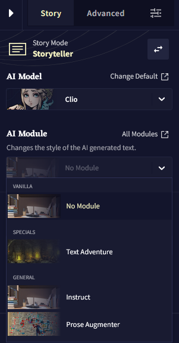

Advanced: Special Modules
다음은 Clio와 Kayra 모델에서만 지원하는, NovelAI Text Generation의 새롭고 실험적인 모듈입니다.
Instruct
이 특수한 모듈은 AI에게 무엇을 계속 할지 말하는 대신, AI에게 무엇을 해야 할지 알려줄 수 있습니다. 예를 들어, 이 모듈을 사용하여 AI에게 직접 요청을 하거나 단순히 글을 어떻게 이어나갈지 방법을 말해줄 수 있습니다. 이 모듈은 사용자가 지시하는 것을 { 중괄호 }를 사용하여 AI에게 지시하므로 일반적인 다른 모듈과는 다르게 작동합니다.
단순하게 {를 입력하면 Instruct Block이 만들어지며 여기에서 지시사항을 입력하면 됩니다. 해당 텍스트가 에디터의 블럭 내에 위치하는 한 이것은 지시instruction로 표시되기 때문에 중괄호를 닫을 필요가 없습니다.

Insturction Blocks는 Editor V2에서만 동작하므로 해당 기능을 이용하기 위해서는 구버전의 이야기를 V2로 업데이트해야 한다는 사실에 유의하십시오.
Instruct Block에서 백스페이스를 눌러 이전 줄로 이동하거나 빈 Instruct Block에서 백스페이스를 눌러 Instruct Block을 삭제할 수도 있습니다.
그리고 이 모듈의 독특한 점은 이것을 사용하기 위해 모듈 리스트에서 선택할 필요가 없다는 것입니다. 컨텍스트의 최근 1000자까지의 지시사항을 입력하기만 하면 모델은 출력을 위해 자동으로 Instruct Module을 사용합니다!
Goose tip: Instruct Module을 사용하지 않을 때, 지시사항은 이야기에서 컨텍스트에서 제외됩니다.
그리고 마지막으로 Instruction Blocks은 에디터 전용이지만 지시사항은 메모리나 작가 노트와 같은 다른 장소에서도 사용할 수 있습니다.
{ 한칸 띄어쓰기한 중괄호 } 사이에 지시사항을 넣기만 하면 됩니다.
예를 들어: { Make the witch do a backflip at some point in the fight. }
메모리나 작가노트에서의 { 한칸 띄어쓰기한 중괄호 } 사이의 지시사항은, 지시사항이 컨텍스트 범위 내의 1000 글자 범위 내에 있는 한, Instruct Module를 자동으로 활성화하는데에 사용할 수도 있습니다.
약간의 창의력을 통해 강력한 자동화된 셋업을 만들수 있어요!
Prose Augmenter
이 특별한 모듈을 사용하면 AI가 더욱 설명적이고 풍성한 글쓰기를 하게 할 수 있습니다. 이야기가 약간 건조해지기 시작했다면 이 모듈은 이야기를 더 풍부하게 만드는 훌륭한 도구가 될 것입니다.